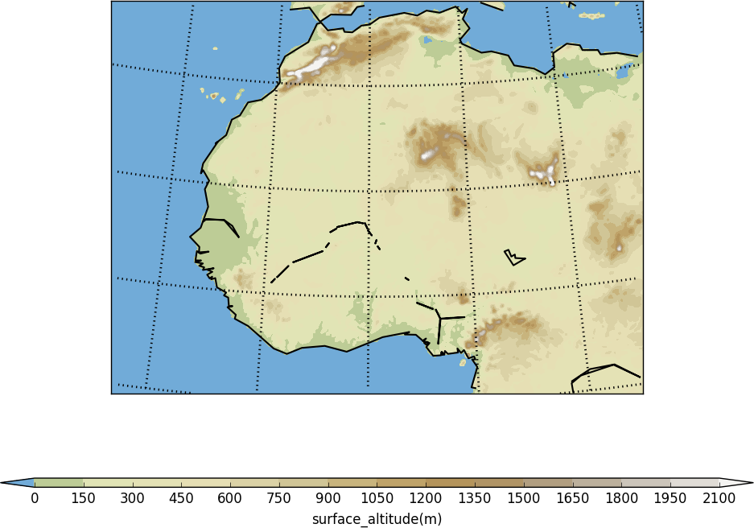

Colour scales¶
There are two default colour scales in cf-plot:
- A continuous scale (‘viridis’) that goes from blue to green and then yellow and suits data that has no zero in it. For example air temperature in Kelvin or geopotential height - see example 1 in the plot gallery.
- A diverging scale (‘scale1’) that goes from blue to red and suits data with a zero in it. For example temperature in Celsius or zonal wind - see example 4 in the plot gallery. The colour scale is automatically adjusted so that blue hues are below zero and red hues above zero.
When no calls have been made to cscale cf-plot selects one of theses scales based on whether there is a zero in the data passed for contouring. If a call is made to cscale with just a colour scale name cfp.cscale(‘radar’), for example, then this colour scale is used for all subsequent plots. The colour scale is adjusted automatically to fit the number of contour levels in the plot.
If a call to cscale specifies additional parameters to the colour scale, then the automatic colour adjustment is turned off giving the user fine tuning of colours as below.
{kind=link}
cfp.levs(min=-80, max=80, step=10)
cfp.scale('scale1')
To change the number of colours in a scale use the ncols parameters.

cfp.cscale('scale1', ncols=12)
cfp.levs(min=-5, max=5, step=1)
To change the number of colours above and below the mid-point of the scale use the above and below parameters. This is useful for fields where you have differing extents of data above and below the zero line.
{kind=link}
cfp.cscale('scale1', below=4, above=7)
cfp.levs(min=-30, max=60, step=10)
For data where you need white to indicate that this data region is insignificant use the white=white parameter. This can take single or multiple values of the index of the colour scale where white is required in the colour scale.

cfp.cscale('scale1', ncols=11, white=5)
cfp.levs(manual=[-10,-8, -6, -4, -2, 2, 4, 6, 8, 10])
To reverse a colour scale use the reverse=1 option to cscale and specify the number of colours required.
cfp.cscale('scale1', reverse=1, ncols=10)
As a short example to show the flexibilty of the colour scale routines we will make a orography plot using the wiki-2.0.rgb orography/bathymetry colour scale. This has as many colours for bathymetry as for the oroggraphy but in this case we just need a blue ocean as we are really only interested in the orography. So in this case we will define a set of levels using levs and then match the colour scale to them. The wiki-2.0.rgb colour scale has as many colours for the ocean as for the land so we can use the above and below options
{kind=link}
import cf, cfplot as cfp, numpy as np
f=cf.read('/opt/graphics/cfplot_data/12km_orog.nc')
cfp.cscale('wiki-2.0', ncols=16, below=2, above=14)
cfp.levs(manual=np.arange(15)*150)
cfp.con(f, lines=0)
User defined colour scales¶
Store these as rgb values in a file with one rgb value per line. i.e.
255 0 0
255 255 255
0 0 255
will give a red white blue colour scale. If the file is saved as /home/swsheaps/rwb.txt it is read in using
cfp.cscale('/home/swsheaps/rwb.txt')
Predefined colour scales¶
A lot of the following colour maps were downloaded from the NCAR Command Language web site. Users of the IDL guide colour maps can see these maps at the end of the colour scales.
Perceptually uniform colour scales¶
A selection of perceptually uniform colour scales for contouring data without a zero in. See The end of the rainbow and Matplotlib colour maps for a good discussion on colour scales, colour blindness and uniform colour scales.
| Name | Scale |
|---|---|
| viridis | |
| magma | |
| inferno | |
| plasma | |
| parula | |
| gray |
NCAR Command Language - MeteoSwiss colour maps¶
| Name | Scale |
|---|---|
| hotcold_18lev | |
| hotcolr_19lev | |
| mch_default | |
| perc2_9lev | |
| percent_11lev | |
| precip2_15lev | |
| precip2_17lev | |
| precip3_16lev | |
| precip4_11lev | |
| precip4_diff_19lev | |
| precip_11lev | |
| precip_diff_12lev | |
| precip_diff_1lev | |
| rh_19lev | |
| spread_15lev |
NCAR Command Language - small color maps (<50 colours)¶
| Name | Scale |
|---|---|
| amwg | |
| amwg_blueyellowred | |
| BlueDarkRed18 | |
| BlueDarkOrange18 | |
| BlueGreen14 | 
|
| BrownBlue12 | |
| Cat12 | |
| cmp_flux | |
| cosam12 | |
| cosam | |
| GHRSST_anomaly | 
|
| GreenMagenta16 | |
| hotcold_18lev | |
| hotcolr_19lev | |
| mch_default | |
| nrl_sirkes | |
| nrl_sirkes_nowhite | |
| perc2_9lev | |
| percent_11lev | |
| posneg_2 | |
| prcp_1 | |
| prcp_2 | |
| prcp_3 | |
| precip_11lev | |
| precip_diff_12lev | |
| precip_diff_1lev | |
| precip2_15lev | |
| precip2_17lev | |
| precip3_16lev | |
| precip4_11lev | |
| precip4_diff_19lev | |
| radar | |
| radar_1 | |
| rh_19lev | |
| seaice_1 | |
| seaice_2 | |
| so4_21 | |
| spread_15lev | |
| StepSeq25 | |
| sunshine_9lev | |
| sunshine_diff_12lev | |
| temp_19lev | |
| temp_diff_18lev | |
| temp_diff_1lev | 
|
| topo_15lev | |
| wgne15 | |
| wind_17lev |
NCAR Command Language - large colour maps (>50 colours)¶
| Name | Scale |
|---|---|
| amwg256 | |
| BkBlAqGrYeOrReViWh200 | |
| BlAqGrYeOrRe | |
| BlAqGrYeOrReVi200 | |
| BlGrYeOrReVi200 | |
| BlRe | |
| BlueRed | |
| BlueRedGray | |
| BlueWhiteOrangeRed | |
| BlueYellowRed | |
| BlWhRe | |
| cmp_b2r | |
| cmp_haxby | |
| detail | |
| extrema | |
| GrayWhiteGray | |
| GreenYellow | |
| helix | |
| helix1 | |
| hotres | |
| matlab_hot | |
| matlab_hsv | |
| matlab_jet | |
| matlab_lines | |
| ncl_default | |
| ncview_default | |
| OceanLakeLandSnow | |
| rainbow | |
| rainbow_white_gray | |
| rainbow_white | |
| rainbow_gray | |
| tbr_240_300 | |
| tbr_stdev_0_30 | |
| tbr_var_0_500 | |
| tbrAvg1 | |
| tbrStd1 | |
| tbrVar1 | |
| thelix | |
| ViBlGrWhYeOrRe | |
| wh_bl_gr_ye_re | |
| WhBlGrYeRe | |
| WhBlReWh | |
| WhiteBlue | |
| WhiteBlueGreenYellowRed | |
| WhiteGreen | |
| WhiteYellowOrangeRed | |
| WhViBlGrYeOrRe | |
| WhViBlGrYeOrReWh | |
| wxpEnIR | |
| 3gauss | |
| 3saw |
NCAR Command Language - Enhanced to help with colour blindness¶
| Name | Scale |
|---|---|
| StepSeq25 | |
| posneg_2 | |
| posneg_1 | |
| BlueDarkOrange18 | |
| BlueDarkRed18 | |
| GreenMagenta16 | |
| BlueGreen14 |
|
| BrownBlue12 | |
| Cat12 |
Orography/bathymetry colour scales¶
| Name | Scale |
|---|---|
| os250kmetres | |
| wiki_1.0.2 | |
| wiki_1.0.3 | |
| wiki_2.0 | |
| wiki_2.0_reduced | |
| arctic |
IDL guide scales¶
| Name | Scale |
|---|---|
| scale1 | |
| scale2 | |
| scale3 | |
| scale4 | |
| scale5 | |
| scale6 | |
| scale7 | |
| scale8 | |
| scale9 | |
| scale10 | |
| scale11 | |
| scale12 | |
| scale13 | |
| scale14 | |
| scale15 | |
| scale16 | |
| scale17 | |
| scale18 | |
| scale19 | |
| scale20 | |
| scale21 | |
| scale22 | |
| scale23 | |
| scale24 | |
| scale25 | |
| scale26 | |
| scale27 | |
| scale28 | |
| scale29 | |
| scale30 | |
| scale31 | |
| scale32 | |
| scale33 | |
| scale34 | |
| scale35 | |
| scale36 | |
| scale37 | 
|
| scale38 | |
| scale39 | |
| scale40 | |
| scale41 | |
| scale42 | |
| scale43 | |
| scale44 |